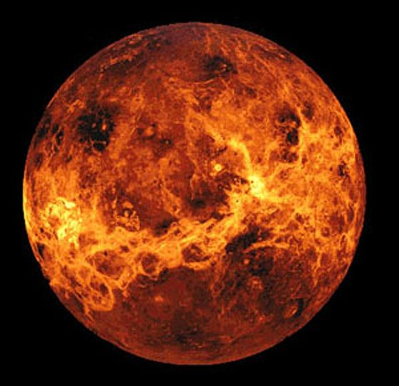

Images of the Planets:



| Planet | Diameter | Distance from Sun | Year Length |
|---|---|---|---|
| Mercury | 4,878 km | 58 million km | 88 days |
| Venus | 12,104 km | 58 million km | 88 days |
| Earth | 12,756 km | 108 million km | 225 days |
| Mars | 6,794 km | 228 million km | 687 days |
| Jupiter | 143,000km | 778 million km | 12 years |
| Saturn | 120,536 km | 1.429 billion km | 30 years |
| Uranus | 51,118 km | 2.871 billion km | 84 years |
| Neptune | 49,528 km | 4.504 billion km | 165 years |
| Pluto | 2,300 km | 5.914 billion km | 249 years |